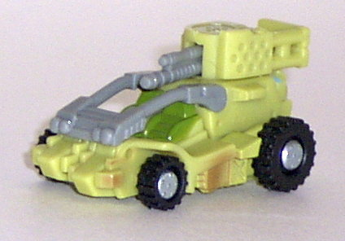
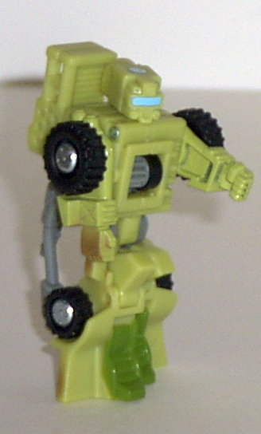
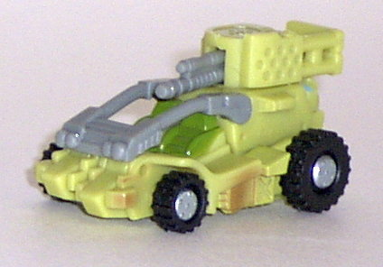
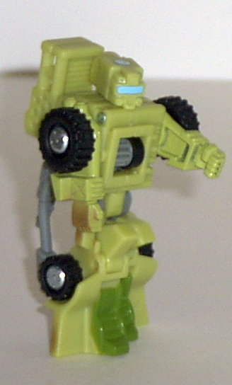
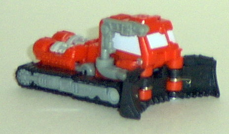
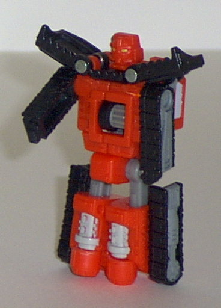
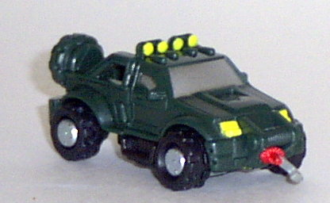
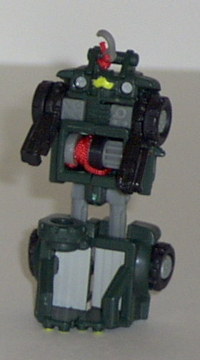

Dune
Runner
Dune
Runner
 
Difficulty of Transformation : Very Easy
Color Scheme : Sandy tan, gray, black, and some military green, brownish tan, and sky blue
Individual Rating : 6.2
Adventure
Team
Allegiance
: Minicon
Size
: Mini-Con (3-pack)
Team Gimmick
: Parts move when rolled
across a surface; also can combine with
Cyclonus
Overall Rating
: 5.5
Dune
Runner


Difficulty of Transformation
: Very
Easy
Color Scheme
: Sandy tan, gray, black,
and some military green, brownish tan, and sky blue
Individual Rating
: 6.2
Vehicle mode is a sand
rail. This mode is pretty nice, with few extras. A little more paint detailing
and mold detailing would probably be nice, but it's hardly what I'd call
inadequate. What's kinda cool is that the bars over the seats can be raised
and lowered- a nice touch. However, Dune Runner's robot head is somewhat
visible from the rear. The robot hands are also slightly visible on the
sides of the vehicle mode, but they're easily overlooked. By rolling Dune
Runner over a flat surface, his guns rotate from side to side- a really
cool action feature, if I do say so myself, and it moves quite smoothly.
The Minicon symbol is on the top of the gun emplacement (which can rotate),
and the Minicon port is on the very rear of the bottom of the vehicle.
Robot mode is decent,
although the transformation is astoundingly unoriginal and boring. (Basically,
you just fold out the legs, turn the head, and pull out the hands.) It
was pretty creative of them to use the seats as the feet, and it's nice
to see a paint app used on the eye visor that is nowhere else on the toy.
His articulation is also decent- his shoulders, hips, knees, and head can
all move. However, his main body's a square, which isn't exactly the best
shape, and the head is really oblong and rectangular. Ugh. Also, the "bar"
piece hangs off his back, and is really floppy. This can get really annoying
after a while, if you ask me.
Dune Runner is a nice toy in vehicle mode,
but he has a pretty boring transformation, and his robot mode suffers from
some proportion problems. Still, his gimmick is really neat, and he's my
personal favorite of the Adventure Team.
Iceberg


Difficulty of Transformation
: Very
Easy
Color Scheme
: Black, gray, orange-red,
light chalky gray, and some greenish-yellow
Individual Rating
: 5.8
Vehicle mode is an arctic
tracker. This mode is pretty decent, if not spectacular (mainly because
the middle of the vehicle is a bit too skinny as a side effect of the robot
mode). However, the mold and paint detailing are prime, as are the proportions.
When you roll Iceberg along on a flat surface, his shovels move back and
forth- less than a stinkin' millimeter, that is. If they actually closed
in on themselves, it might be better, but as it is, this gimmick is freakin'
lame. The Minicon symbol is on top of the front of the tracker, and the
Minicon port is on the underside of the mode, in the center.
Robot mode reminds me
of Dune Runner's. In other words, it's alright, but there's some proportion
problems, and the transformation's dead boring. (You just pull out the
head, lengthen the legs, twirl the waist around, and pull out the arms.)
Iceberg's body is huge compared to his puny arms, which bugs me a bit.
The articulation is acceptable, but not anything great- his shoulders,
hips, and waist can move, and that's it. Which leaves him with some rather
stiff poses. Oh, and his Minicon port is on his bum. Eeeewww... One positive,
though, is that Iceberg is HUGE for a Minicon. He's about 175% as large
as your average Minicon- wowzers!
Iceberg is like Dune
Runner, but with a lamer gimmick. Nice vehicle mode, but an unoriginal
and boring robot mode with proportions a bit off.
Ransack


Difficulty of Transformation
: Very
Easy
Color Scheme
: Dark military green,
gray, black, and some silver, bright yellow, red, and light chalky gray
Individual Rating
: 4.4
Vehicle mode is an offroad
4X4 jeep. Again, just like the other Adventure Team members, the vehicle
mode is pretty nice. No extras to speak of whatsoever, and the paint and
mold detailing are good. Ransack's gimmick is so-so- if you roll him along
on a flat surface, he'll reel his hook-on-a-string. Nice... until it all
rolls up, that is, and then you're stuck with nothing until you manually
pull it out again. Rather self-defeating, that gimmick is. (And it's not
like that itty bitty hook can actually hook onto anything, anyways...)
The Minicon port placement also irks me- it's actually in the center of
the spare tire on the back of the jeep. At first, they may seem a stroke
of creative genius, as it blends right in with the tire. However, it makes
Ransack look positively silly if you connect him to a larger transformer,
given that he hangs off them sideways. The Minicon symbol is etched onto
the middle of the hood.
Ransack's robot mode
is definitely the worst of the bunch. Basically, it's just a big body with
little arms and feet. His head is basically just molded onto his body piece,
which really doesn't look great. In fact, the only reason you can tell
it's a head at all is because of the colored visor... Also, the articulation
is rather poor: basically, only his shoulders, hips, and knees can move.
And his huge, mostly-hollow lower legs really don't make for many good
poses with his given articulation, either... And, as you can probably tell,
we've got another very boring transformation here, since basically you
just fold out the legs and the arms, and that's it. Meh.
Ransack has a pretty
nice vehicle mode, but a pretty badly done and boring robot mode, and a
self-defeating gimmick. My least favorite of the Adventure Team.

The Adventure Team can
also each combine with Cyclonus via attaching to the gears under his cockpit.
Then, by pulling Cyclonus' rotor trigger, not only does his rotor spin,
but the particular Adventure Team member's gimmick is activated, as well!
Pictured above is Dune Runner attached to Cyclonus is such a manner, and
Ransack and Iceberg attach to him in a similar manner. However, Dune Runner's
really the only one who looks good attached to Cyclonus. Iceberg is simply
to big to effectively fit there, and Ransack just looks stupid, since a
little bitty hook being reeled in by Cyclonus isn't going to do anything.
Thusly, I usually leave the latter two off of Cyclonus and don't even bother
with it.
The Adventure Team have some nice vehicle modes, and Dune Runner has a cool gimmick, but other than that, they're pretty mediocre and rather boring. And Ransack's robot mode is just plain horrible. Nice for troop-builders, but there are several other Minicon Teams out there who are better.
Review by Beastbot